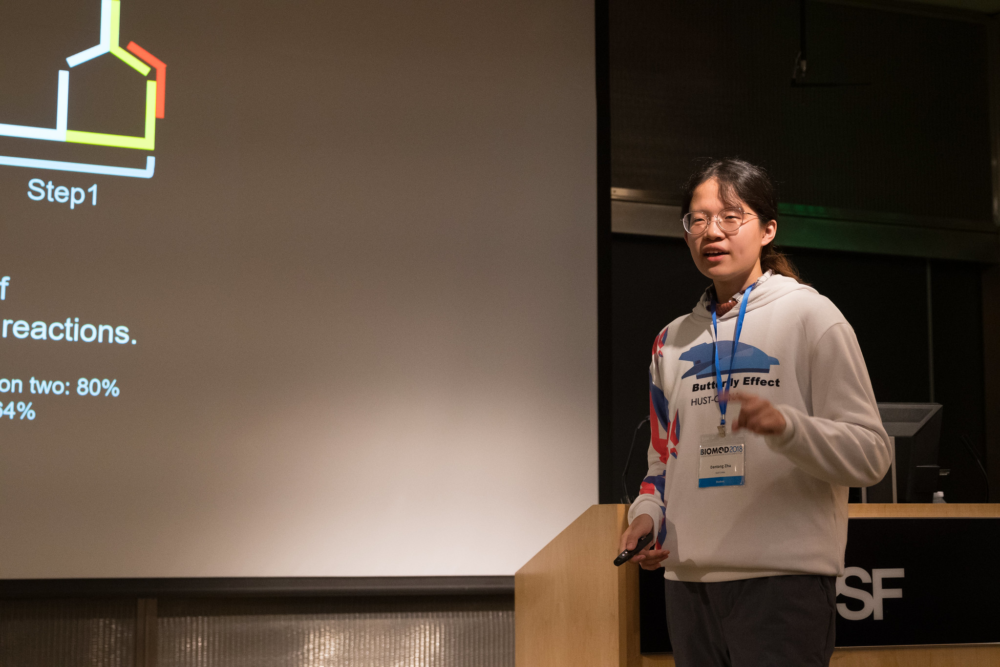
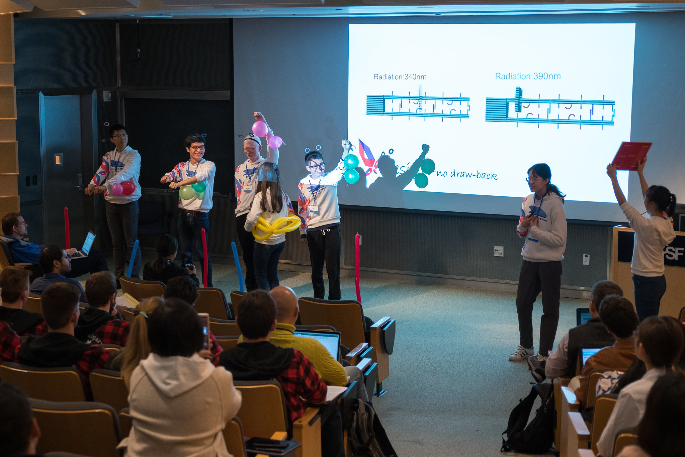

Education
Columbia University
Master of Science in Biostatistics, Data Science Track
2021.09 - 2023.05
Huazhong University of Science and Technology
B.Eng. in Biomedical Engineering, Electrical and Computer Engineering Track, GPA: 3.60 / 4.00
2016.09 - 2020.06
Outstanding Graduate, Merit-Based Undergraduate Scholarship,Outstanding Individual in University Innovation and Entrepreneurship Activity
Experience
Software Engineer, Full-Time
iFLYTEK Co., Ltd.(2020.12 - 2021.08)
-
Embedded Vue.js in frontend to request APIs; provided solutions for incomplete error indication by requesting APIs in a loop via WebSockets when overloading more than 15 files
-
Re-sealed components in Element-UI for uploading multiple files each time; adopted Flex to regulate layouts
-
Displayed 4000+ real-time employee Information List; realized dynamic route matching via router.addRoutes to load profiles without restarting a new page and reduce 20% memory consumption; polished with better User Interface
-
Applied EventBus to pass on values using $emit & $on for calling cross-page function; designed unit test for blocks
-
Implemented navigation and lazy loading routes via Vue-Router and shortened the time to homepage by 30%
Software Engineer, Internship
iFLYTEK Co., Ltd.(2020.07 - 2020.12)
-
Built project environment swiftly based on Vue Cli; optimized and packaged through Webpack; prepared CSS via Sass
-
Encapsulated Axios library for requesting APIs to receive data on single-page application; stored the state data in VueX for management employed JS cookies for token storage and combined with VueX to realize permission control
-
Manipulated Echarts graphics with DOM for data annotation; delivered 5 days ahead with large-scale satisfaction
-
Simulated background data by mock.js and mixins.js in the frontend; launched version control system through Git
Project
Student Social Network Application
Node.js, Express, React, Redux, MongoDB, ES6+
-
Built backend amount of APIs; integrated React frontend to cooperated with APIs and created the workflow
-
Protected routes/endpoints with JWT(JSON Web Tokens); established reducers and actions for resources
-
Integrated Redux for app state management and container components creation; conducted APIs testing with Postman and app testing with Redux Chrome extension
Shopping Online Applets for Community
-
Established shopping cart module in React framework; implemented Spring MVC backend with MongoDB databases by MongoEngine; tested the page compatibility of 8+ different-sized mobile equipments
-
Incorporated Redux-Saga to process the updated request and send HTTP request to the server; captured responses to manage product list in real time combined with the pull-down refresh
-
Encapsulated wx.request as a common plug-in; added the bottom tabbar and extracted as public components
Competition
Biomolecular Design Competition (BIOMOD)
-
Developed a new nanomachine via wedging Azobenzene and its derivative into DNA with 30% efficiency improvement
-
Modelized the structure in caDNAno software and revised by analysing the data from experiments to increase the stability by 40%
-
Created video and webpages in JavaScript, CSS, HTML
-
Coordinated brainstorms to develop a novel nanomotor in DNA Self-Assembly with 30% efficiency improvement
-
Organized the team perfomance of eight undergraduates and made oral presentation on site: Butterfly Effect- A New Nanomachine Design, Biomolecular Design Competition, San Francisco, US, Oct. 2018
 